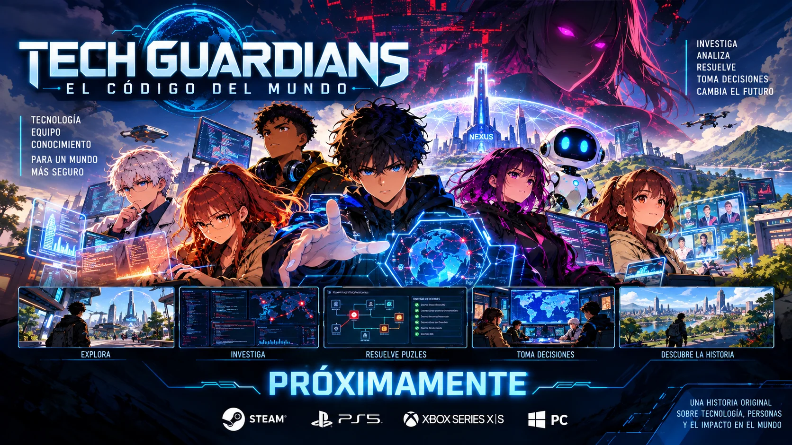
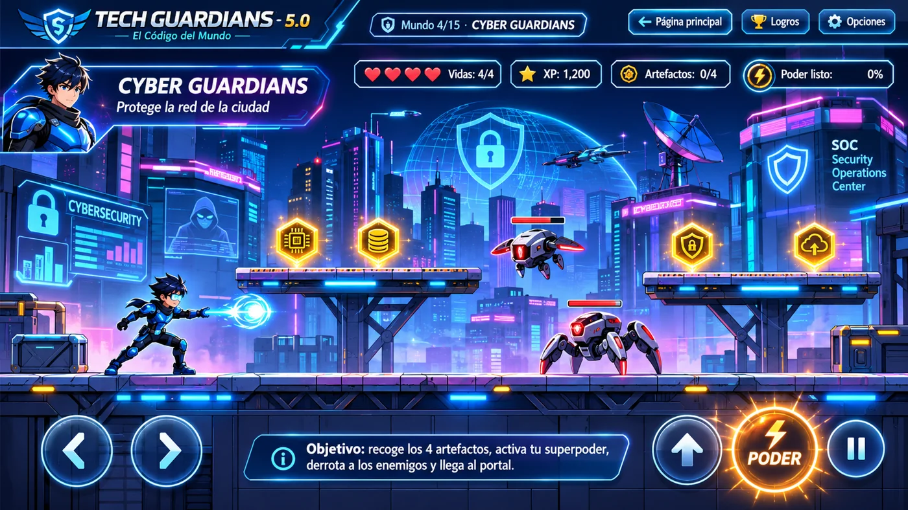
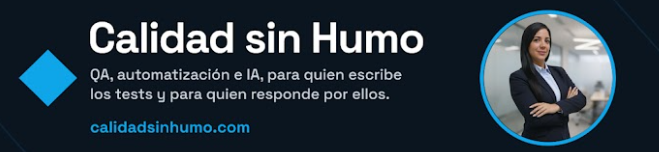
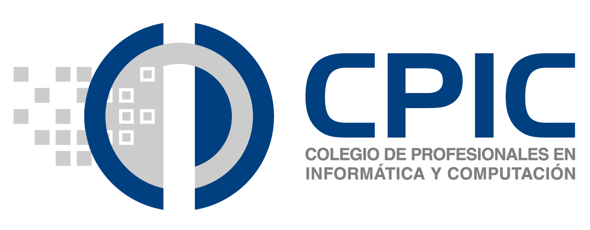

IQPMI
Mejora de procesos, eficiencia y resolución de problemas.
Visitar canal de YouTubeEXPERIENCIA INTERACTIVA · JUEGO DISPONIBLE
Juega TECH GUARDIANS GAME directamente en el navegador: 36 mundos tecnológicos, desafíos educativos, superpoderes, enemigos temáticos y una batalla final contra NEXUS OMEGA.

AVENTURA INTERACTIVA · 30 MUNDOS
Selecciona idioma, personaje y dificultad. Reúne los artefactos de cada mundo, desbloquea disparos especiales y responde los desafíos técnicos.

El juego se abre en una página independiente, con controles para computadora y móvil y un enlace en la cabecera para regresar.
APRENDE Y SUPERA LOS DESAFÍOS
Refuerza tus conocimientos con recursos de organizaciones y especialistas. Estos canales son externos e independientes de Tech Guardians.
Mejora de procesos, eficiencia y resolución de problemas.
Visitar canal de YouTube
Calidad de software, pruebas, automatización e inteligencia artificial.
Visitar canal de YouTube
Conocimientos generales sobre informática, computación y tecnología.
Visitar canal de YouTubeHabilidades de poder: comunicación, liderazgo y desarrollo personal.
Visitar canal de YouTube